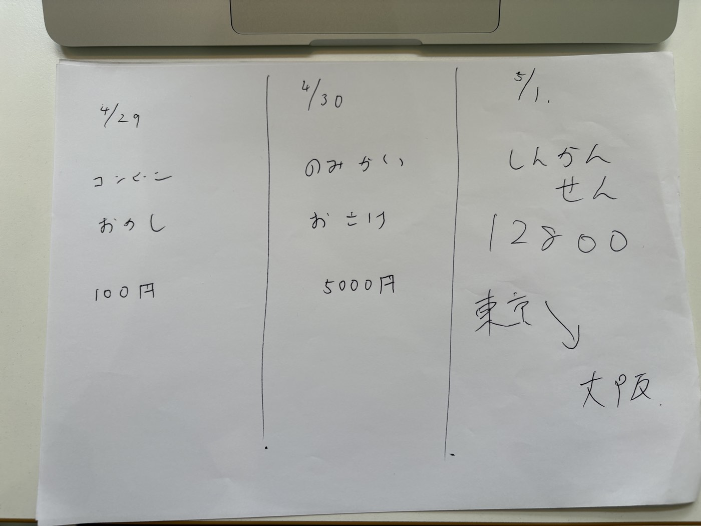

紙の領収書をデジタルにさえしてもらえれば、
あとはAIが、いかようにでも料理します。
4月7日のお打ち合わせで、加賀谷先生がお話しくださったお困りごと。
この3つ、いま全部、解けるようになっています。
しかも、特別な道具を新しく買う必要はありません。
少し前まで、「紙を読み取る精度」が大きな課題と言われていました。
でも、いまは事情が変わってきています。
📌 ここがキモ
いまのAIは、画像を見せれば字が崩れていても、かすれていても、ちゃんと読めるようになっています。
しかも専用の道具は要りません。普段から使われているAI（ChatGPT・Claude・Geminiなど）で十分に形になります。
「ほんとにそんなに簡単に読めるの？」というお声に答えるべく、かなり雑な手書きメモを、ふつうのAIに見せてみました。

・字は崩れてる
・3列に殴り書き
・線もまっすぐじゃない
・写真は手持ちで撮影
| 日付 | 場所 | 内容 | 金額 |
|---|---|---|---|
| 4/29 | コンビニ | おかし | 100円 |
| 4/30 | のみかい | おさけ | 5,000円 |
| 5/1 | しんかんせん | 東京→大阪 | 12,800円 |
💡 この実演がそのまま、加賀谷先生の事務所での処理にも使えます。
手書きの領収書も、レシートも、束ごとでも。デジタルにさえ変えてもらえれば、こちらで全部、形にします。
こちらが料理するために、紙をこちらに送っていただくところだけ、お願いしたいです。
やり方はとってもシンプル。毎月まとめて、郵送していただくだけです。
👍 撮る手間もゼロ・読み取り機もいらない。実際この方法で運用してるクライアントさんもいらっしゃいます
📥 受け取ったあと、こちらでやること
小川さんの秘書チームと、AI（普段から使っているもの）の合わせ技で進めます。
🌟 つまり、先生の事務所でこれまで職員さんが「読み取り・入力・仕訳」までされていた工程のうち、
「紙をデジタルにする」一歩目だけ事務所側に残して、その先はぜんぶ巻き取れます。
職員さんは、そのぶんの時間をコンサルのお仕事に回していただけます。